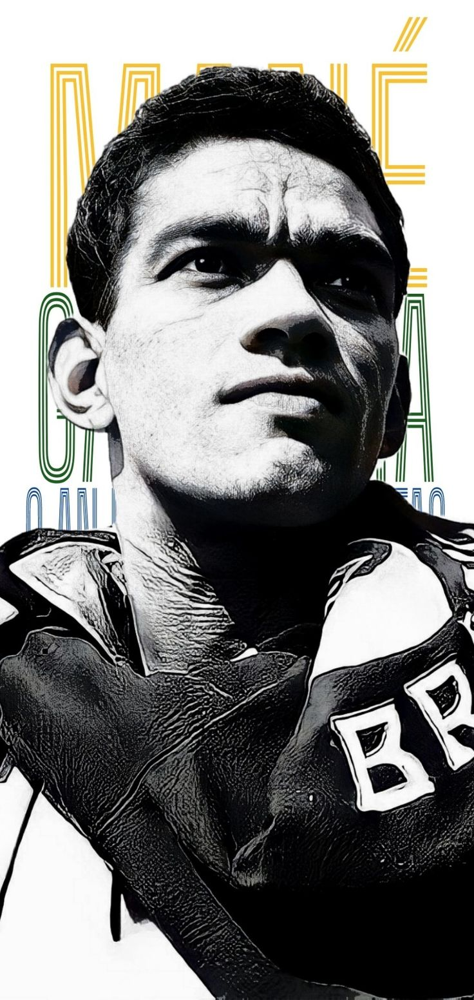

LENDAS DO FUTEBOL BRASILEIRO
Garrincha: A Alegria do Povo
O homem que transformou o drible em arte e conquistou o coração de milhões de brasileiros.

O INÍCIO DE UMA LENDA
De Pau Grande para o mundo
Nascido em 1933, em Pau Grande, no Rio de Janeiro, Manuel Francisco dos Santos, conhecido como Garrincha, se tornaria um dos maiores jogadores da história do futebol brasileiro.
Mesmo com as pernas tortas, Garrincha encantava com seus dribles imprevisíveis e sua habilidade extraordinária. Em 1953, chegou ao Botafogo, clube onde construiria grande parte de sua história.
1933
Nascimento de Garrincha
1953
Chegada ao Botafogo
O anjo das pernas tortas
Uma lenda do Glorioso
Em 1953, Garrincha chegou ao Botafogo e iniciou uma trajetória que marcaria para sempre a história do clube.
Em 1953, Garrincha chegou ao Botafogo e deu início a uma das histórias mais marcantes do futebol brasileiro. Com seus dribles desconcertantes, sua velocidade e um estilo de jogo completamente imprevisível, o camisa 7 rapidamente conquistou a torcida alvinegra. Mesmo com as pernas tortas, transformava cada partida em um espetáculo, deixando adversários para trás e arrancando aplausos das arquibancadas. Durante sua passagem pelo Glorioso, Garrincha se tornou um dos maiores ídolos da história do clube. Foi protagonista de conquistas importantes, como os Campeonatos Cariocas de 1957, 1961 e 1962, além dos Torneios Rio-São Paulo de 1962 e 1964. Ao lado de grandes jogadores, como Nilton Santos, Didi e Zagallo, ajudou a transformar o Botafogo em uma das equipes mais respeitadas do país. Seu talento também brilhou com a camisa da Seleção Brasileira. Garrincha foi peça fundamental na conquista da primeira Copa do Mundo, em 1958, na Suécia. Mas foi em 1962, no Chile, que viveu um de seus momentos mais extraordinários. Após a lesão de Pelé, assumiu o protagonismo da equipe e conduziu o Brasil ao bicampeonato mundial, encantando o mundo com seus dribles, gols e atuações inesquecíveis. Mais do que títulos e números, Garrincha deixou um legado de alegria e criatividade. Seu futebol representava a essência do jogo brasileiro: liberdade, improvisação e paixão. Não por acaso, ficou eternizado como a Alegria do Povo, um jogador que fez história tanto com a camisa alvinegra quanto com a Amarelinha.
Saiba mais sobre o Botafogo